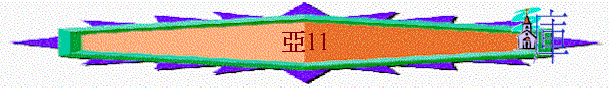

|
耶和華心裏極其火熱 |
|||
|
為選民犯罪而大發烈怒 |
為重建錫安而極其火熱 |
為復興錫安而極其火熱 |
為彌賽亞國而親自成就 |
|
1:2-6 |
1:7-6:15 |
7-8 |
9-14 |
1.為拯救群羊而極其熱心----第1默示(9-11)
A.拯救者必來臨(9-10)
B.拯救者必被棄(11)
〜上文題及基督會降臨地上(有二次來臨)，在第一次來臨後，11章卻題及羊群卻厭棄祂，帶來神要刑罰他們
a.以色列的哀聲(11:1-3)
「利巴嫩哪，開開你的門，任火燒滅你的香柏樹。松樹啊，應當哀號；因為香柏樹傾倒，佳美的樹毀壞。巴珊的橡樹啊，應當哀號，因為茂盛的樹林已經倒了。聽啊，有牧人哀號的聲音，因他們榮華的草場毀壞了。有少壯獅子咆哮的聲音，因約但河旁的叢林荒廢了。」11:1-3
〜利巴嫩在巴勒士坦北端之邊界，有一萬四千呎之高度
～開開你的門表示任由火來；而香柏樹是堅強與貴重的樹木，連堅固的香柏樹也傾倒，何況松樹呢！
～巴珊是在約但河東之北部邊界，巴珊地有很多橡樹
～堅固的樹木，以色列地的牧人，少壯的獅子也發出哀聲，因以色列地再會受到審判，樹木毁壞，草塲也荒涼，動物也沒安居之所
b.牧羊人的被棄
(1)神不憐憫他們
「聽啊，有牧人哀號的聲音，因他們榮華的草場毀壞了。有少壯獅子咆哮的聲音，因約但河旁的叢林荒廢了。耶和華我的神如此說：「你撒迦利亞要牧養這將宰的群羊。買他們的宰了他們，以自己為無罪；賣他們的說：『耶和華是應當稱頌的，因我成為富足。』牧養他們的並不憐恤他們。耶和華說：『我不再憐恤這地的居民，必將這民交給各人的鄰舍和他們王的手中。他們必毀滅這地，我也不救這民脫離他們的手。』」11:3-6
～神給撒迦利亞一項工作，就是要牧養這將宰的選民
～「買他們的宰了他們」指外邦侵佔者欺壓苦待選民；賣他們的」指猶太領袖也不憐恤他們，領導可能中飽私囊，出賣同胞，也欺壓百姓。
〜神也不憐恤這將宰的選民，交由先知(也預表了基督)牧養他們
(2)牧人照顧他們
「於是，我牧養這將宰的群羊，就是群中最困苦的羊。我拿著兩根杖，一根我稱為「榮美」，一根我稱為「聯索」。這樣，我牧養了群羊。」11:7
～但先知仍明白神沒放棄選民，仍忠心牧養這將宰的群羊，他拿兩根杖，一根稱為「榮美」指神與他們立約建立關係的的榮美，一根稱為「聯索」指神將南北以色列聯繫在一起。
(3)羊群厭棄牧人
「我對他們說：「你們若以為美，就給我工價。不然，就罷了！」於是他們給了三十塊錢作為我的工價。耶和華吩咐我說：「要把眾人所估定美好的價值丟給窰戶。」我便將這三十塊錢，在耶和華的殿中丟給窰戶了。」11:12-13
「前行後隨的眾人喊著說：和散那（原有求救的意思，在此是稱頌的話）歸於大衛的子孫！奉主名來的是應當稱頌的！高高在上和散那！」耶穌既進了耶路撒冷，合城都驚動了，說：「這是誰？」」太27:9-10
～牧人向他們取工價，但他們只給三十塊錢，只是奴僕的身價，明顯對牧人一種輕視的態度，但他們卻以為是美好合適的。
～「窰戶」（也可作銀匠）常與聖殿有關，他們可能負責作堅殿的器皿，士17:4記載二百舍客勒銀子交給銀匠，鑄成一個像。現在只有三十舍客勒，至多只能鑄成一個小像，豈不微乎其微呢？
〜另外此段也是預言基耶穌被當時百姓(羊群)厭棄，他們用三十塊錢收買猶大，想合謀捉拿殺耶穌
(4)牧人管教羊群
(A)除滅三個以色列的牧人
「一月之內，我除滅三個牧人，因為我的心厭煩他們；他們的心也憎嫌我。」亞
11:8
～「一月」究竟指怎樣的日期呢？有不同之說法，歸納起來，至少有三種說法：（一）一個月只是短期，為時不久。（二）一月有三十天，每日為一年，共計有三十年之久。（三）為時十分久長，無法作準確的計算
～有人認為這三個牧者是指被擄前的猶大三個君王，即約雅敬，約雅斤及希底家。
～又有學者認為這三個君王應在西流基時期(The
Seleucid Period, 198-140 B.C.)（希臘分出來的西流基王朝，）即在西流基四世起的三王(Seleucus
IV, Heliodorus, Demetrius)。（http://www.ccbiblestudy.org/Old%20Testament/38Zech/38CT11.htm）
～「我」應代表神，神厭煩他們，除滅以色列的領袖
(B)廢棄神與人之間的盟約
「我就說：「我不牧養你們。要死的，由他死；要喪亡的，由他喪亡；餘剩的，由他們彼此相食。」我折斷那稱為「榮美」的杖，表明我廢棄與萬民所立的約。」11:9-10
〜人與神的聯合是榮耀及滿有恩典，人厭棄神，神也廢掉與人之間美好恩典關係，也任他們死亡
(C)廢棄人與人之間的關係
「我又折斷稱為「聯索」的那根杖，表明我廢棄猶大與以色列弟兄的情誼。」11:14
〜可能代表他們會再被分散，兄弟之間已不會再多見面了
c.惡牧人的來臨
「耶和華又吩咐我說：「你再取愚昧人所用的器具，因我要在這地興起一個牧人。他不看顧喪亡的，不尋找分散的，不醫治受傷的，也不牧養強壯的；卻要吃肥羊的肉，撕裂他的蹄子。無用的牧人丟棄羊群有禍了！刀必臨到他的膀臂和右眼上。他的膀臂必全然枯乾；他的右眼也必昏暗失明。」」11:15-17
(1)管教牧人的興起
「因我要在這地興起一個牧人。他不看顧喪亡的，不尋找分散的，不醫治受傷的，也不牧養強壯的；卻要吃肥羊的肉，撕裂他的蹄子。」11:16
〜此牧人可能指神日後興起羅馬管教當時厭棄耶穌的猶太人；另有人以為多利買四世（Ptolemy
IV: Philopator在222 B.C.年繼承王位）。又有人認為自瑪可比時代（猶大瑪可比抵抗希臘的時代）起以色列的首領一直可至敵基督者。（http://www.ccbiblestudy.org/Old%20Testament/38Zech/38CT11.htm）
(2)無用牧人的受罰
「無用的牧人丟棄羊群有禍了！刀必臨到他的膀臂和右眼上。他的膀臂必全然枯乾；他的右眼也必昏暗失明。」11:17
〜但這無用的牧人至終會被審判，他們丟棄羊群，他可能沒用膀臂保護群羊，所以刀必臨到他們的膀臂；他的眼目可能只仰望在金錢上，屈枉正直，沒有守望群羊情況，所以右眼也必昏暗失明